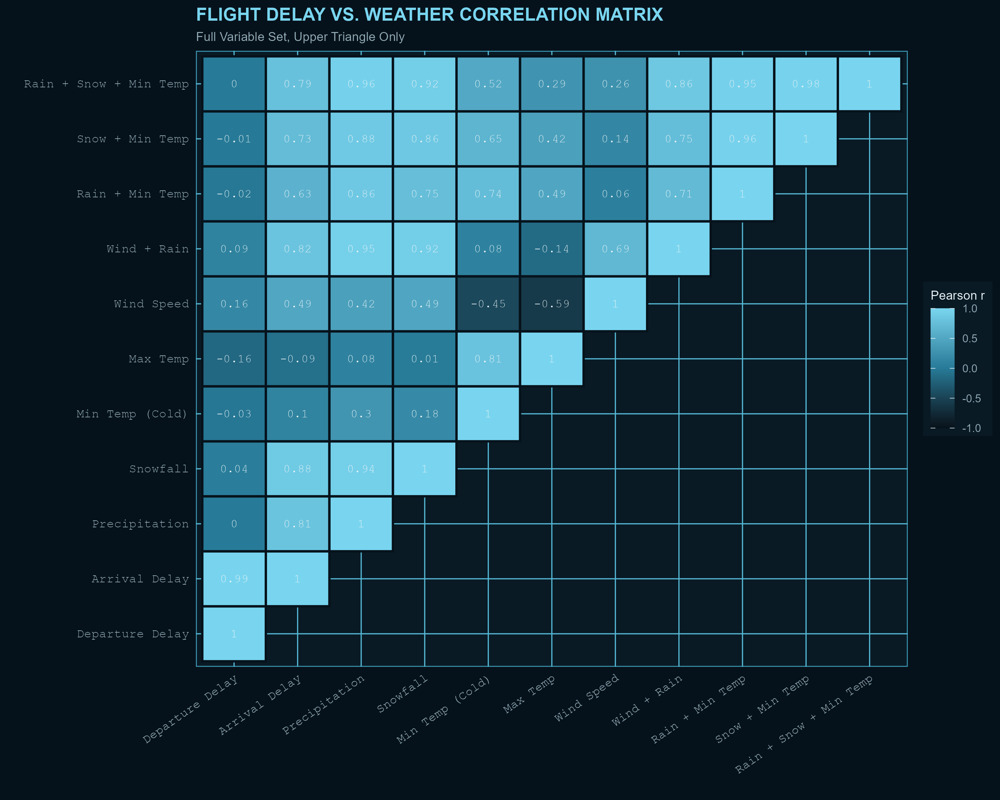
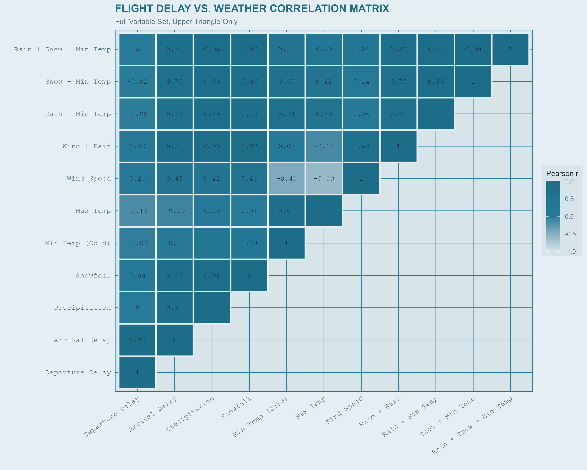

Independent Project
In aviation, weather is one of the primary variables, alongside logistics, that impact whether or not flights will be delayed. Just this year, all flights in New York City were cancelled for days due to a massive blizzard hitting the region, as such monitoring weather is critical for companies.
Importantly, this model only looks at weather and wether or not there was a delay. This means the prediction is
esssentially a Yes/No decision variable. A Logistic Regression is used to handle the ~300,000 samples taken from the dataset and ensures
randomisation and avoiding over-fitting the data.
Because the numerical weather variables have vastly different scales (the average for wind might be 36km/h, while the average for rain could be 3.6ml/m²),
StandardScaler is used to standardise the variables by creating the same mean of 0 and a standard deviation of 1, so the model won't weigh them differently.
Data is sourced from open-source data, such as the U.S. Bureau of Statistics and the National Centers for
Environmental Information. Relevant indicators, such as time of departure/arrival and climate data are isolated.
A simple correlation analysis shows how similar the variables are to each other. Correlation
is necessary to ensure machine learning can find differences in data structures upon which it differentiates and categorises it later on. Below you can see which
variables fit those criteria. The correlation test was only done for one month (February 2026) for the John F. Kennedy Airport (JFK) in New York, however, has
later been verified in the extended timeframe with more data entries and remains robust.


Access the underlying processing and correlation analysis script below, or download the raw files directly.
↓ Download .R# Load required libraries
library(dplyr)
library(tidyr)
library(ggplot2)
library(reshape2)
us_flight_data <- read_csv("us_flight_data.csv")
us_weather_data <- read_csv("us_weather_data.csv")
# filter for date (February 2026)
jfk_weather <- us_weather_data %>%
filter(station_id == "USW00094789", date >= 20260201, date <= 20260228) %>%
mutate(DAY_OF_MONTH = date %% 100)
feb_flights <- us_flight_data %>%
filter(YEAR == 2026, MONTH == 2)
weather_wide <- jfk_weather %>%
pivot_wider(id_cols = DAY_OF_MONTH, names_from = element, values_from = value)
# daily mean departure delays from JFK
# I aggregate by day to avoid copies of the same data entries, though the
# trade-off here is sample size (N=28 for every day)
# analysis for 6-months and multiple airports confirm the correlation results
jfk_dep <- feb_flights %>%
filter(ORIGIN == "JFK") %>%
group_by(DAY_OF_MONTH) %>%
# here the median is used to avoid distortion of data due to outliers (think a
# single delay of 3 hours)
summarise(mean_dep_delay = median(DEP_DELAY, na.rm = TRUE))
# daily mean arrival delays to JFK
jfk_arr <- feb_flights %>%
filter(DEST == "JFK") %>%
group_by(DAY_OF_MONTH) %>%
summarise(mean_arr_delay = median(ARR_DELAY, na.rm = TRUE))
jfk_analysis <- weather_wide %>%
inner_join(jfk_dep, by = "DAY_OF_MONTH") %>%
inner_join(jfk_arr, by = "DAY_OF_MONTH")
# cumulative indicators
jfk_interactions <- jfk_analysis %>%
mutate(
# Wind + Rain (Combined wet and windy conditions)
wind_plus_rain = AWND + PRCP,
# Rain + TMin (Wet and cold conditions)
rain_plus_tmin = PRCP + TMIN,
# Snow + TMin (Deep winter / sub-zero snowy conditions)
snow_plus_tmin = SNOW + TMIN,
# Multi-hazard composite: Rain + Snow + TMin (Severe winter storm index)
rain_snow_tmin = PRCP + SNOW + TMIN
)
# narrow down to just the variables going into the correlation matrix
selected_vars_flight <- jfk_interactions %>%
select(any_of(c("mean_dep_delay", "mean_arr_delay", "PRCP", "SNOW", "TMIN", "TMAX", "AWND",
"wind_plus_rain", "rain_plus_tmin", "snow_plus_tmin", "rain_snow_tmin")))
# calculation of Pearson's r across all variables (weather-vs-weather,
# delay-vs-delay, and weather-vs-delay all included)
comprehensive_cor_matrix <- cor(selected_vars_flight, use = "pairwise.complete.obs")
# keep only the upper triangle + diagonal so each pair (e.g. PRCP vs SNOW)
# appears once instead of twice (mirrored) in the melted/plotted output
cor_matrix_triangle <- comprehensive_cor_matrix
cor_matrix_triangle[lower.tri(cor_matrix_triangle)] <- NA
cor_melted_full <- melt(cor_matrix_triangle, na.rm = TRUE)
names(cor_melted_full) <- c("Var1", "Var2", "value")
print(cor_melted_full)Now using RandomForest, a correlation analysis is technically not necessary because RandomForest models are mathematically robust to multicollinearity, however, I still like to inspect to to see if multiple feature are highly correlated. RandomForest will split feature importance between highly correlated features and artifially lower them. So, looking at highly correlated variables kets me know which variables to remove to reduce memory usage (though this is of course optional, the model will still work fine regardless).
The goal with this project is to predict flight delays using weather. Of course, a major
predictor of flight delays upon arrival is flight delay upon departure, i.e. the best predictor
for whether or not a flight will arrive delayed at its destination is if it left its origin airport
already delayed.
The weather model focuses on any flights to an arrival airport with more than 15 minutes of delay. While the
code is a lot longer due to data wrangling, the actual machine learning model is rather short. 80% of the
data is used for training, while the remaining data is used for testing the model. Most importantly,the RandomForest
ensemble is built from 100 independent decision trees. Unlike Deutsche Bahn, a minorty if flights are delayed, so a balanced
class weight ensures the model treats both on-time and delayed flights as equally important. This machine learning project is of
course a binary count of flight delays (yes or no); while the U.S. Bureau of Statistics also records exact amount of delays,
a next step would seeing how accurate predictions of flight delays can be. For now, any flight delayed more than 15 minutes is
basically the same, irrepsective of the exact amount of delay, whether that would be 20 or 280 minutes. In the world of aviation,
these two flights are of course not equal.
Data from 2-days prior (e.g. 5th and 6th of January) is used to predict wether or not a flight is delayed (e.g. for January 7th).
Of course not only the weather at the destination airport matters, but also at the origin airport. So an aeroplane leaving LAX to JFK
both be impacted by weather anomalies in at LAX and at JFK, and this is accounted for in the model.
Since this model relies exclusively on weather data, it will naturally never reach 100% (or even 90%) accuracy. Flight delays are driven by a massive web
of non-weather factors—such as air traffic control congestion, mechanical failures, crew scheduling issues, and airline turnaround times.
However, it is fascinating to see how strong of a predictor weather actually is on its own, providing a clear signal of environmental
disruption across the US airspace.
The overall proportion of correct delay and non-delay predictions (Accuracy) is 64.38%. Out of all flights the model flagged as weather-risky,
about 22% actually experienced a delay. The model successfully captures roughly a third of all actual weather-driven delays. The model has
an F1 Score of 25.93% compared to the baseline delay rate of 19.3%.
import pandas as pd
from sklearn.pipeline import Pipeline
from sklearn.preprocessing import StandardScaler
from sklearn.linear_model import LogisticRegression
from sklearn.metrics import (
accuracy_score, precision_score, recall_score, f1_score, confusion_matrix
)
january = pd.read_csv("january_flights_with_weather.csv")
february = pd.read_csv("february_flights_with_weather.csv")
features = [
"ORIGIN_AWND_lag1", "ORIGIN_AWND_lag2", "ORIGIN_PRCP_lag1", "ORIGIN_PRCP_lag2",
"ORIGIN_TMIN_lag1", "ORIGIN_TMIN_lag2", "ORIGIN_TMAX_lag1", "ORIGIN_TMAX_lag2",
"ORIGIN_SNOW_lag1", "ORIGIN_SNOW_lag2", "DEST_AWND_lag1", "DEST_AWND_lag2",
"DEST_PRCP_lag1", "DEST_PRCP_lag2", "DEST_TMIN_lag1", "DEST_TMIN_lag2",
"DEST_TMAX_lag1", "DEST_TMAX_lag2", "DEST_SNOW_lag1", "DEST_SNOW_lag2"
]
for df in [january, february]:
df["IS_DELAYED"] = (pd.to_numeric(df["ARR_DELAY"], errors="coerce") >= 15).astype(int)
df.dropna(subset=features + ["IS_DELAYED"], inplace=True)
X_train, y_train = january[features], january["IS_DELAYED"]
X_test, y_test = february[features], february["IS_DELAYED"]
model = Pipeline([
("scaler", StandardScaler()),
("classifier", LogisticRegression(class_weight="balanced", random_state=42, max_iter=1000))
])
model.fit(X_train, y_train)
y_pred = model.predict(X_test)
accuracy = accuracy_score(y_test, y_pred)
precision = precision_score(y_test, y_pred)
recall = recall_score(y_test, y_pred)
f1 = f1_score(y_test, y_pred)
print(f"Accuracy: {accuracy:.2%}")
print(f"Precision: {precision:.2%}")
print(f"Recall: {recall:.2%}")
print(f"F1 Score: {f1:.2%}")Above you can see the visualised results of this process.
↓ Download .pyWhile cleaning the data, I ran into the problem that the datasets were too large to effectively clean and reorder the variables. Initially, because there are about 16 million entries in the weather dataset, this was my first solution for the limited memory problem. I figuured splitting the data into chunks would be enough to make sure the data can load effienctly:
import pandas as pd
flight_chunks = []
for chunk in pd.read_csv(flights_path, chunksize=50_000):
chunk = chunk[(chunk["YEAR"] == 2026) & (chunk["MONTH"].between(1, 2))]
if not chunk.empty:
flight_chunks.append(chunk)
flights = pd.concat(flight_chunks, ignore_index=True)
del flight_chunksHowever, as you can probably tell, while the data will load, it will do so very slowly and eventually, will be out of memory. The problem faced here is that to know which rows and data to discard, they still have to be read and materialised in memory. To avoid this, I use DuckDB, which discards unnecessary data while reading it:
import duckdb
flights = duckdb.query(f"""
SELECT YEAR, MONTH, DAY_OF_MONTH, ORIGIN, DEST, ARR_DELAY,
from read_csv_auto('{flights_path}')
WHERE YEAR = 2026 AND MONTH BETWEEN 1 AND 2
""").to.df()